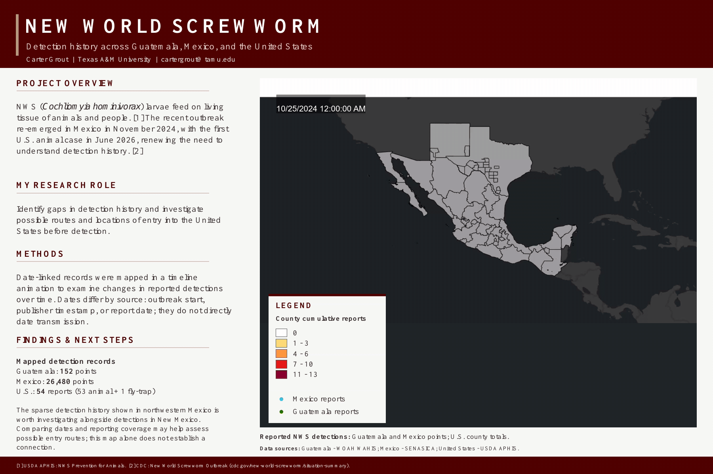

New World Screwworm
Detection history across Guatemala, Mexico, and the United States. Research poster by Carter Grout, Texas A&M University.
Open poster at full size ↗
The animation preserves the supplied map timeline. Source dates represent outbreak start, publisher timestamp, or report date and do not directly date transmission. The poster’s reported totals describe the compiled dataset, not the count at every animation frame.
Reduced-motion preferences start with a static poster. Pausing shows the original static map; playing restarts the animation.